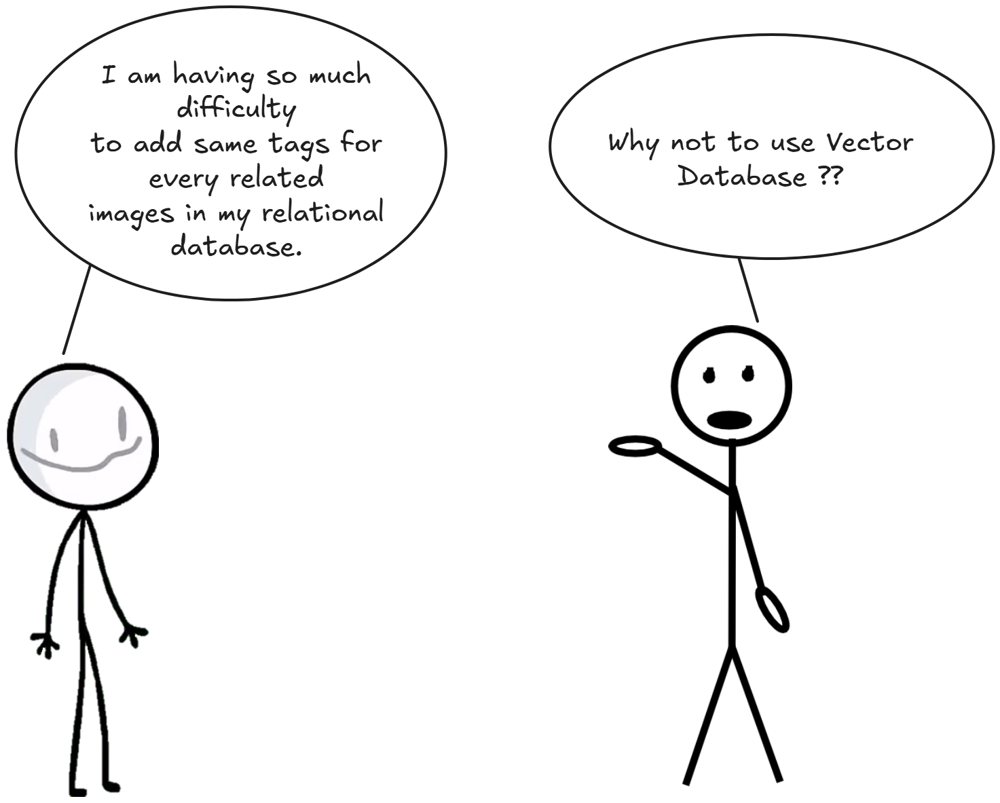
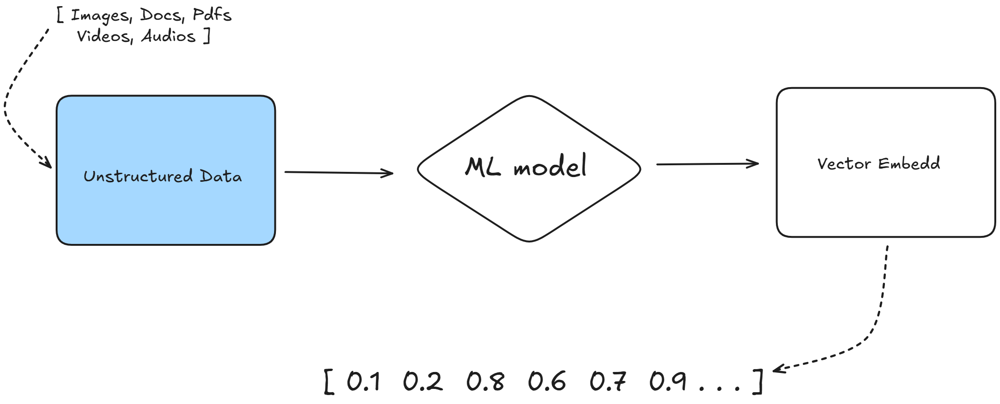
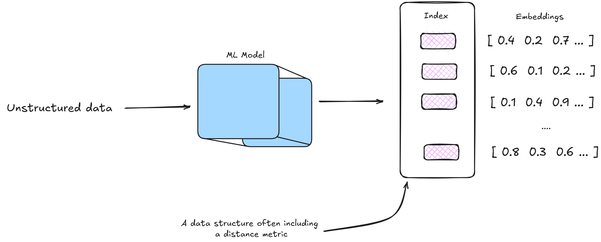

Vector databases have been generating a lot of excitement lately, with companies raising hundreds of millions of dollars to develop them. Some even call them the new era of AI databases because they’re designed to handle complex data, like embeddings used in AI applications. They’re incredibly powerful and enable some amazing use cases, such as real-time recommendation systems or advanced search features. However, for many projects, using a vector database might be overkill, as simpler solutions could work just fine.
About 80% of the data we encounter today is unstructured, meaning it doesn’t neatly fit into the rows and columns of traditional relational databases. This includes things like social media posts, images, videos, audio files, and even emails or text documents. Unlike structured data, such as numbers or predefined categories, unstructured data is messy and complex, making it hard to maintain and query using conventional databases. Lets take an example of a image if we want to put this into relational database in order to search for similar
What ends up up happening is that often we manually assign keywords or tags to it because from the pixel values alone we cannot search for similar images and the same hodls true for unstructured text blobs or audio and video data.
So to ease this up here comes vector embeddings or vector databases
Vector databases solve this problem by understanding that "maroon," "orange," and "black" are mathematically similar, even though they're different words. They store information as numbers (vectors) and use math to find similar items instead of looking for exact matches.
This way it helps how we build smart applications, from search engines that understand what we really mean to, recommendation systems that knows our preferences better than we do. But how exactly do it turn words, images, and other data into numbers that computers can compare mathematically?
It uses clever algorithms to so called the vector embeddings this is done using a Machine Learning Model, a vector embedding is simply a list of numbers, like [0.2, 0.8, 0.1, 0.9]. We can take it as coordinates that describe where something sits in a mathematical space.
Taking colors as example like, each position in our color vector represents [first number (how much red 0.0 = minimum red, 1.0 = maximum red), second number(how much green), third number (how much blue)] we call rgb color code so for Red it becomes [1.0, 0.0, 0.0] for Blue is becomes [0.0, 0.0, 0.1] for green it becomes [0.0, 1.0, 0.0] and for purple it becomes [0.5, 0.0, 0.5]. Now if we want to find colors similar to purple, we can use math to calculate which other colors are closest. Purple [0.5, 0.0, 0.5] is mathematically closer to red than to green. How ?? in purple if we look into closely [0.5 (50% is red), 0.0 (0% green), 0.5 (50% blue)]
For text, the process is more complex but follows the same principle. We
use machine learning models to convert words into vectors of hundreds or
thousands of numbers. These numbers capture the meaning and relationships
between words. For example: "Sedan" might become [0.2, 0.8, 0.1, 0.9, 0.3,
...], "SUV" might become [0.3, 0.7, 0.2, 0.8, 0.4, ...], "Chocolates"
might become [0.9, 0.1, 0.8, 0.2, 0.1, ...]. Notice how "SEDAN" and "SUV"
have similar numbers, while "Chocolates" has very different numbers. This
mathematical similarity reflects their real-world relationship.
But once we have these vectors, how do we actually calculate which ones
are similar to each other?
When we have vectors, we need mathematical formulas to measure how similar they are. The most common methods are cosine similarityand euclidean distance (I have only tried these twoo T_T )
Cosine Similarity measures the angle between two vectors. Two vectors pointing in the same direction have a cosine similarity of 1.0, while vectors pointing in opposite directions have a similarity of -1.0. The formula is \(\text{cosine_similarity} = \frac{\mathbf{A} \cdot \mathbf{B}}{|\mathbf{A}| \times |\mathbf{B}|}\)
Let's calculate this for two simple vectors:
First, we calculate the dot product (A · B): \(A · B = (1×2) + (2×4) + (3×6) = 2 + 8 + 18 = 28\)
Next, we calculate the magnitudes:
Finally: cosine_similarity = \(28 / (3.74 × 7.48) ≈ 1.0\)
This result of 1.0 makes sense because vector B is exactly twice vector A, so they point in the same direction.
Euclidean distance is a fundamental metric used in vector databases to measure the "straight-line" distance between two points (or vectors) in a multi-dimensional space. It is derived from the Pythagorean theorem and is particularly useful for quantifying the similarity or dissimilarity between data points represented as vectors, such as embeddings for text, images, or other data types in a vector database. \[\text{distance} = \sqrt{(A_1 - B_1)^2 + (A_2 - B_2)^2 + \cdots + (A_n - B_n)^2}\]
In vector databases, Euclidean distance is used to find nearest neighbors or cluster similar items. Like, when searching for similar documents or images, the database compares the Euclidean distance between their vector representations (embeddings). Smaller distances indicate greater similarity.
Time to face a canon event question : How do we organize millions of
vectors so we can find similar ones quickly ??
here comes
Vector databases faces challenges while storing millions of vectors, they need an system to find similar vector quickly.
This is where vector indexing comes in. An index is like a sophisticate filing system that organizes vectors based on thier similarity, allowing the database to skip most vectors during a search. Its similar to what database indexing we have discussed during System Design 101
where indexes (e.g., B-trees or hash tables) optimize retrieval by organizing data for efficient access. In vector databases, specialized indexing techniques like Approximate Nearest Neighbor (ANN) algorithms, hierarchical navigable small world (HNSW) graphs, or product quantization are often used to balance speed, accuracy, and memory usage, making sure that our database is scalable and performant similarity searches even with massive datasets.
Now that we understand the math, how do these calculations help us build useful applications?
Search Engines are one of the best examples when we search for "how to fix a broken faucet," the search engine converts your query into a high-dimensional vector using techniques like word embeddings or transformer models. It then compares this query vector to vectors representing web pages, finding those with similar semantic content, even if they use different phrasing, such as "repair leaky tap" or "plumbing maintenance." By leveraging vector similarity, search engines deliver relevant results that align with the user's intent, regardless of exact keyword matches.
Instagram converts photos into vectors that describe colors, shapes, objects, and even abstract features like artistic style. These vectors enable the platform to recommend visually similar photos, detect duplicate uploads, or identify content that violates community guidelines. Similarly, video platforms use vector representations to analyze scenes or frames, enabling features like content-based video recommendations or automated highlight detection.
The math remains the same in all these cases, we're calculating similarity between vectors using the formulas we learned earlier. The difference is in how we create the vectors and what we do with the similarity results.
This is all from myside on Vector Database. Hope I was able to add few value to your today's learning :)